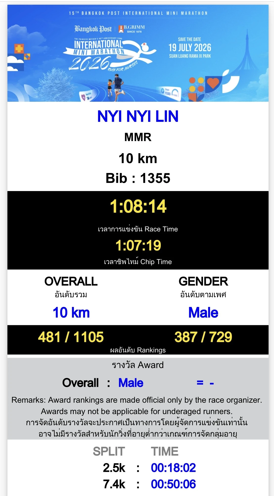
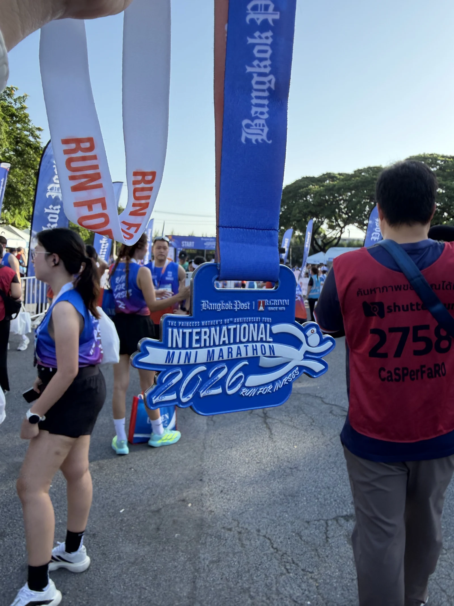
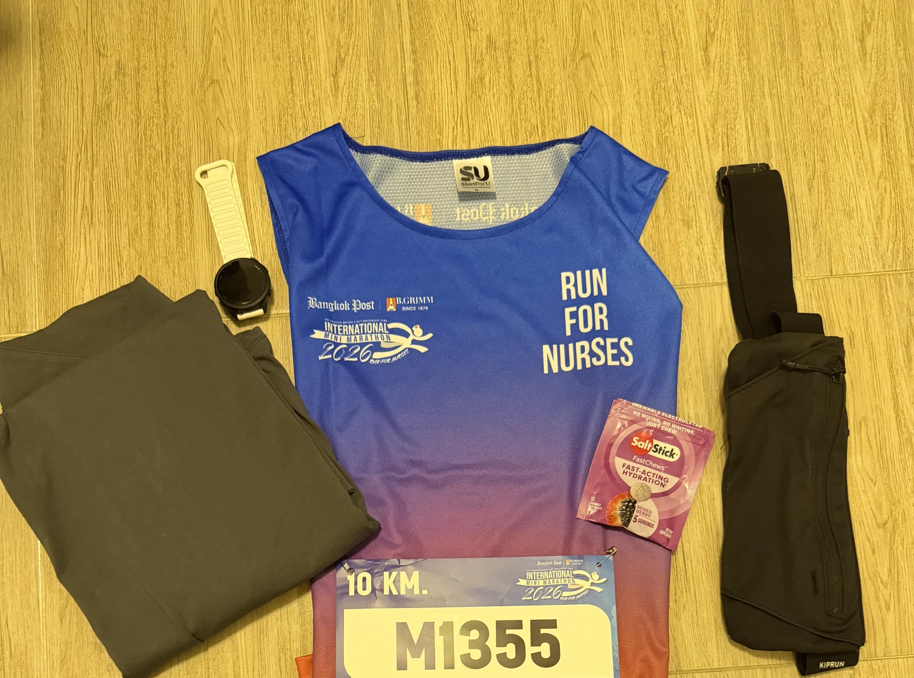

Race 05 · 10K finisher
Run for
Nurses.
10KM
Official record
The result.
Race day setup
On the day.
Suan Luang
Rama IX Park
Open in Google Maps
ASICS
Novablast 5
Responsive trainer · race-day pair
- Race time
- 1:08:14
- 2.5K split
- 18:02
- 7.4K split
- 50:06
Verified finish
Official proof.
The official 10K timing certificate from the 15th Bangkok Post International Mini Marathon.


What came home
The medal.
The fifth finish in this running record—and the fastest 10K of the five race days so far.
Race 05 / 05Before the start
Race kit.
Bib 1355, the blue-to-red event singlet, watch, belt, hydration, and the Novablast 5.
View the race location